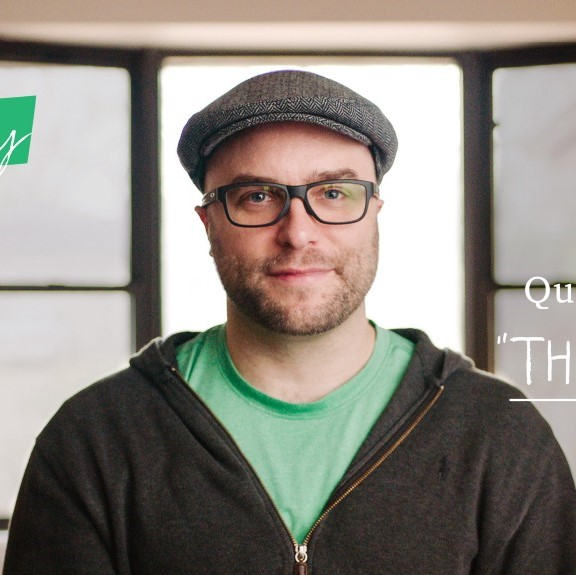

The Code Guru
Quincy Larson
- About - Quincy Larson was a school director for six years before he started to learn to code so that he could create tools for making schools more efficient. His own journey into learning to code was long and winding and he recognized the need for a single-track curriculum for newbie developers. Upon analysing data on coding bootcamps in the US and realizing how inaccessible coding education was to the masses, he set out to create a fully-online inclusive free platform for peer-driven learning of coding - the result of which is freeCodeCamp.
- His Dream - freeCodeCamp was launched in October 2014 and incorporated as Free Code Camp, Inc. The founder, Quincy Larson, is a software developer who took up programming after graduate school and created freeCodeCamp as a way to streamline a student's progress from beginner to being job-ready.
- His Life - He lives in Texas with his family and spends his time working on freeCodeCamp, writing and interviewing authors for the freeCodeCamp publication, co-ordinating open source projects such as Chapter (a free MeetUp alternative), advocating for a free and open internet and playing with his two young kids.
- Ciriculam - The self-paced curriculum involves 1,400 hours and web development projects, plus 800 hours of contributing to open-source projects for nonprofits and is constantly expanded by more challenges and projects. This translates into about one year of full-time coding. The curriculum is divided into Responsive Web Design, JavaScript Algorithms and Data Structures, Front End Libraries, Data Visualization, APIs and Microservices, and Information Security and Quality Assurance. Participants receive a certificate after completing each section.
- Non-profit work - As students of freeCodeCamp finish all certificates of the curriculum, they get the opportunity, and are encouraged, to work with nonprofit organizations.
Examples have been Indonesia-based nonprofit Kopernik and People Saving Animals.
In 2016, freeCodeCamp announced their "Open Source for Good" initiative, which extends and open sources their nonprofit work to all nonprofits and organizations to use. freeCodeCamp is my effort to correct the extremely inefficient and circuitous way I learned to code. I’m committing my career and the rest of my life towards making this process as efficient and painless as possible. All those things that made learning to code a nightmare to me are things that we are trying to fix with freeCodeCamp. ~Quincy Larson